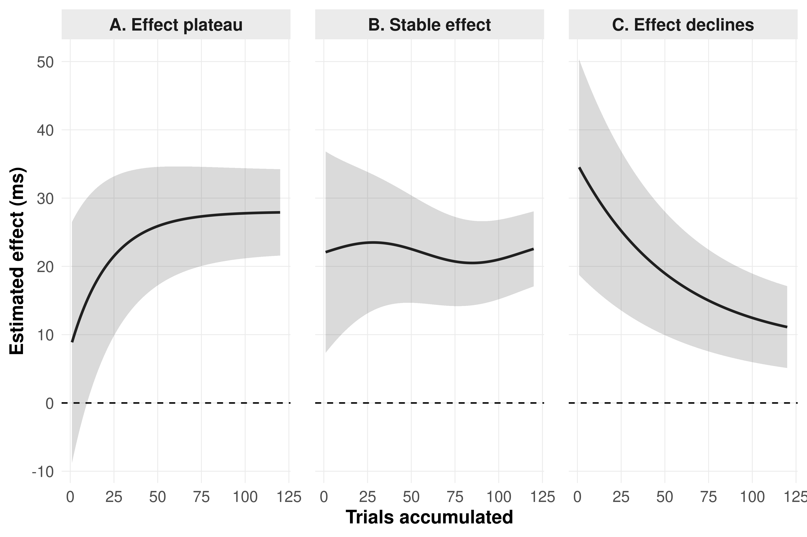
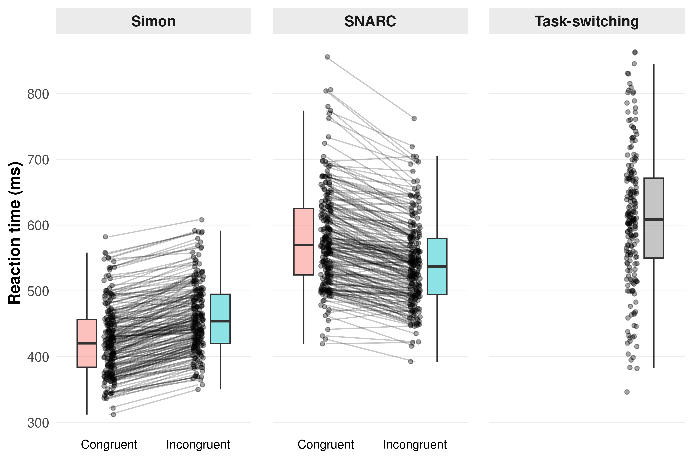
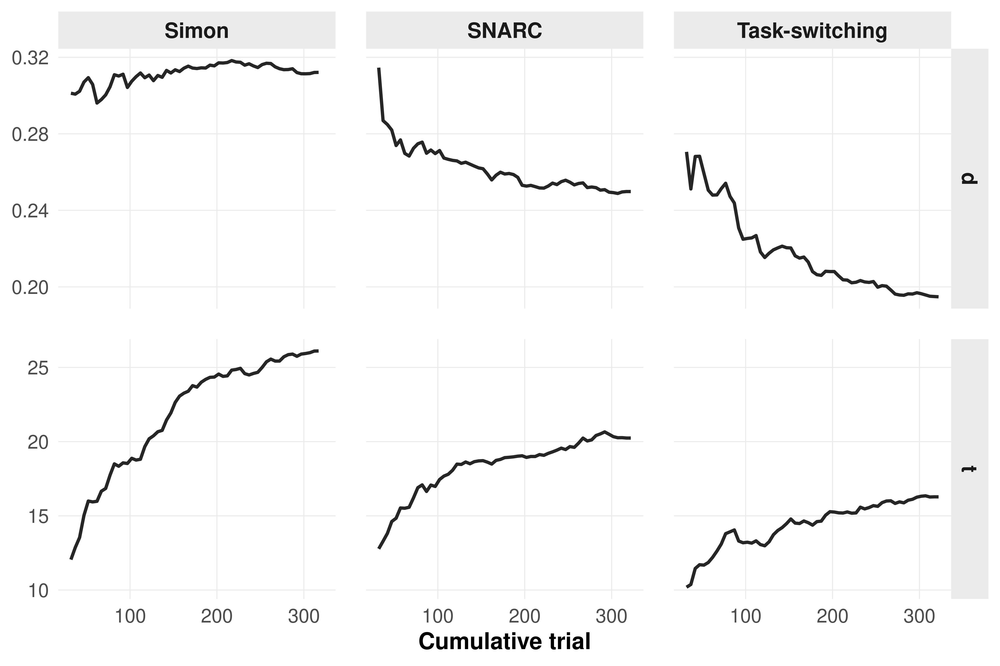
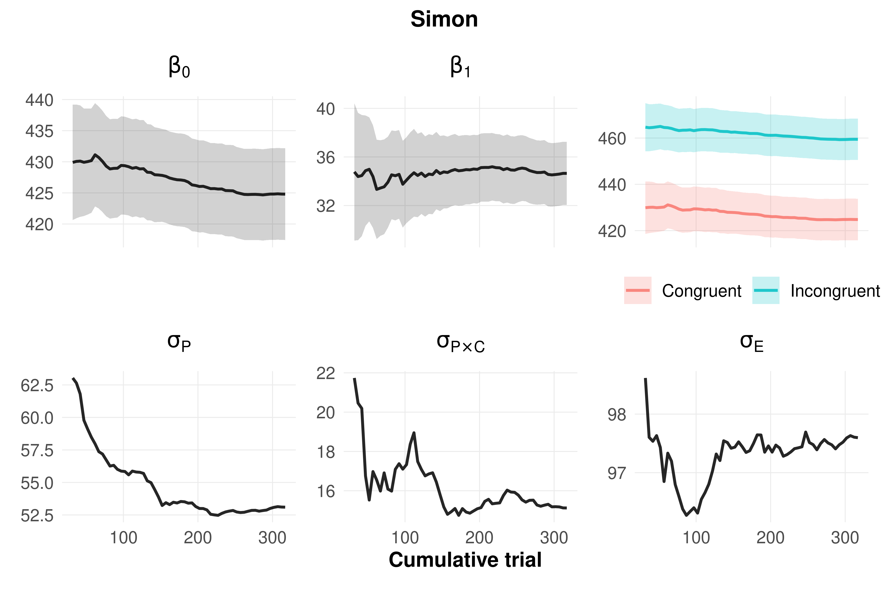
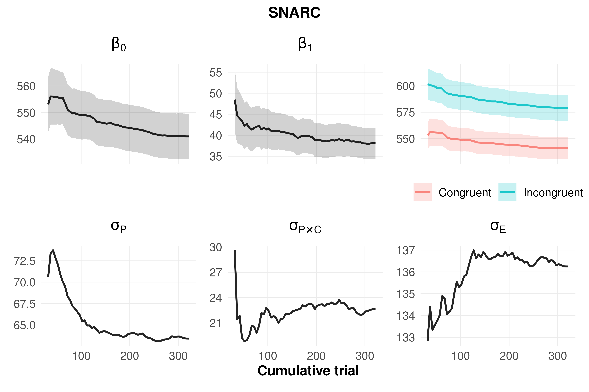
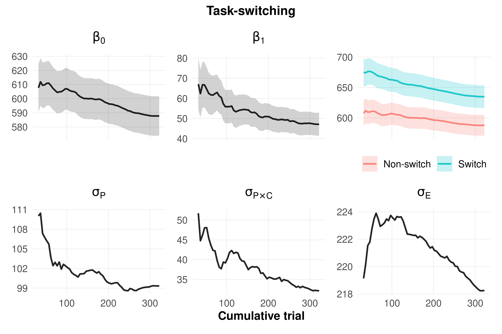
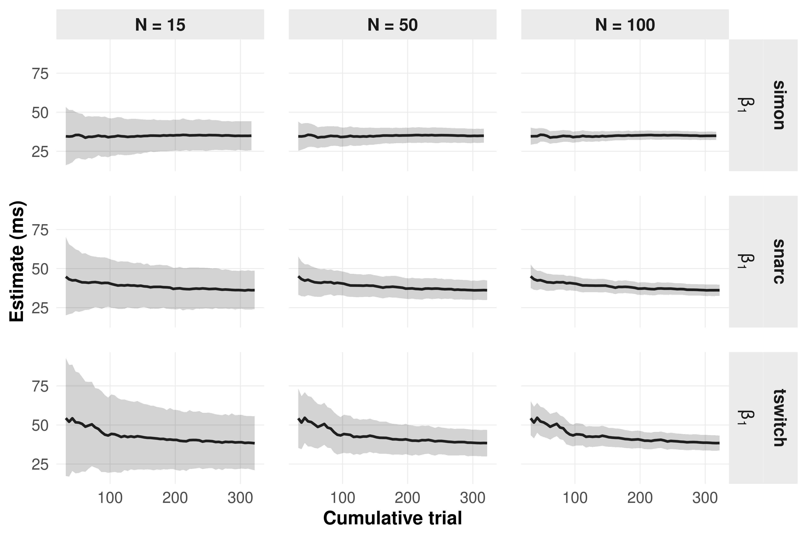

![]()

‘The More the Trials, the Stronger the Effect’. Fact or Myth? Evidence from Classical Experimental Psychology Paradigms
Abstract
This is my abstract.
Keywords
keyword1, keyword2
Warning
The paper is a work in progress!
Introduction
The movement addressing the replicability crisis in psychological science has shed new light on the need to test and improve research practices (Anvari and Lakens 2018; Open Science Collaboration 2015). Educating new researchers to counter Questionable Research Practices (QRPs; e.g., Fiedler and Schwarz (2016)) is of fundamental importance for raising awareness within the scientific community, improving the quality of research, and restoring trust in scientific findings (e.g., Asendorpf et al. 2013; Hendriks, Kienhues, and Bromme 2016, 2020). In this context, renewed attention has been given to the importance of designing careful and thorough study plans; among the key issues discussed, statistical power has gained increasing prominence (Anderson, Kelley, and Maxwell 2017; Vankelecom et al. 2025). Greater awareness of the detrimental impact of underpowered studies (Ioannidis 2005; Francis 2012) has shown that this issue is not only a matter of statistical methodology (e.g., Giner-Sorolla et al. 2024), but also that underpowered studies negatively affect resource management (time, funding, participant availability) and may increase the temptation to engage in QRPs (Ferguson and Brannick 2012).
Given a specific experimental design and research hypothesis, four parameters are needed for power analysis: \(\alpha\)-level (i.e., Type I-error risk), population effect size, sample size, and power (i.e., the likelihood of detecting an effect if it truly exists). In order to determine one of those, the remaining three have to be known or estimated (Cohen 1988). For example, sample-size determination analysis (i.e., a priori; Giner-Sorolla et al. (2024)) returns a target sample size given a desired \(\alpha\)-level and power, and the required effect size, which is a feature of the investigated phenomenon given the research design. In other words, this procedure returns the minimum sample size given the effect size. While the advantage of this procedure is clear, in practice it is difficult to use accurately, since power is determined by the unknown population effect size, and the need to input a “reasonable” effect size when this is poorly known may lead to misinterpretation and QRPs. This discussion is described in greater detail by Giner-Sorolla et al. (2024).
A common practical workaround is to derive the expected effect size from prior literature, especially when the phenomenon of interest has already been shown to be robust across studies. In psychology, limited effects have accumulated enough empirical support to be considered relatively stable, and these estimates are often used as benchmarks for planning new studies. However, even when an effect is well established, its estimated magnitude is not independent of the way the study is designed and analyzed. In particular, the same phenomenon can yield different effect size estimates in between- and within-subjects designs, because the two approaches differ in how variability is handled and, consequently, in how the standard error is computed.
In between-subjects designs, the effect is typically standardized against the variability observed across independent participants, so the standard error reflects both true individual differences and measurement noise. In repeated-measures designs, by contrast, each participant serves as their own control, and the relevant error term is often reduced because stable between-person variability is removed from the comparison. As a result, repeated observations can substantially improve precision, but only up to the point at which additional trials mainly add redundancy rather than new information. This distinction is especially important in experimental psychology, where researchers may be tempted to assume that increasing the number of trials will mechanically increase the observed effect size, when in fact trial accumulation primarily affects the precision of the estimate, and may also interact with time-dependent changes in performance (Baker et al. 2021; Miller 2024).
A useful illustration comes from the literature on the Spatial Numerical Association of Response Codes (SNARC) effect (Viarouge, Hubbard, and McCandliss 2014). The SNARC effect is among the most robust findings in numerical cognition and reflects faster left-sided responses to relatively small numbers and faster right-sided responses to relatively large numbers. Importantly, meta-analytic work has shown that its magnitude varies systematically with task demands, response modality, average response latencies, and participant characteristics, including age (Oliveira Wood et al. 2008). This makes the SNARC effect a useful example of a stable psychological phenomenon whose observed size is nevertheless contingent on how the task is designed and how responses are sampled over time (Bonato, Zorzi, and Umiltà 2012; Oliveira Wood et al. 2008).
In this sense, increasing the number of trials may improve the precision with which the SNARC effect is estimated, but it does not imply that the effect is invariant across all repeated observations. On the contrary, if later trials differ from earlier ones because of learning, fatigue, or changing strategies, the effect estimate may change as a function of trial accumulation rather than simply become more precise. This issue is not merely technical. If the magnitude of the effect remains stable while its standard error decreases, then increasing the number of trials is beneficial because it improves inferential precision. However, if the effect itself changes across trials because of unknown and more or less unpredictable motives (e.g., fatigue, learning, adaptation, or strategic shifts), then additional trials may alter the estimate of the phenomenon rather than simply refine it. In this sense, repeated-measures designs raise a specific planning problem that is not captured by standard power calculations based only on participant number: researchers must also consider whether the effect is expected to remain constant over the course of the task, and whether trial-level accumulation genuinely improves estimation or instead introduces temporal heterogeneity (Mangin et al. 2022; Jangraw et al. 2023; Bowling, Gibson, and DeSimone 2022).
In principle, effect size is a property of the underlying phenomenon and does not depend on sample size or the number of trials; it indexes the magnitude of an effect rather than its statistical significance (Berben, Sereika, and Engberg 2012). However, the estimated effect size obtained from sample data can vary with trial structure, especially in repeated-measures settings where responses are aggregated across multiple observations. Brand et al. (2011) showed through Monte Carlo simulations that increasing the number of trials can substantially inflate observed standardized effect size estimates when trial-to-trial correlations are modest or low, even though the true effect remains unchanged. Thus, more trials may improve reliability and power, but they do not guarantee an unbiased estimate of effect size unless the dependence among repeated observations is taken into account.
In this discussion, a related but distinct issue concerns how the number of trials affects statistical power and effect estimation in repeated-measures paradigms. In principle, increasing the number of trials should improve precision by reducing within-participant error, but this benefit depends on the relative magnitude of within- and between-participant variance, as well as on whether the target effect remains stable across the course of the task. Using power contour plots, Baker et al. (2021) showed that power is jointly determined by sample size and number of trials, and that the advantage of adding trials becomes substantial only when within-participant variance is sufficiently large relative to between-participant variance. Importantly, they also showed that the optimal balance between participants and trials is task-dependent, because some paradigms benefit from more trials while others reach an asymptote beyond which additional repetitions add little to statistical power. Extending this logic, Miller (2024) argued that the conventional assumption that more trials are always better is too simplistic for reaction-time paradigms, because the optimal number of trials depends on the relative sizes of person-to-person variability, trial-to-trial noise, and practice-related changes in performance. Through simulations based on large reaction-time datasets, Miller (2024) showed that, for most effects, power was greater when trials were spread across more participants rather than concentrated within fewer participants, although the optimal trade-off depended on the specific effect and on how it evolved with practice. This is especially relevant for classical experimental paradigms, in which trial accumulation may not only reduce measurement error but also interact with learning, adaptation, fatigue, or strategy shifts.
Taken together, these studies suggest that the planning of repeated-measures experiments should not rely on participant number alone, nor on the assumption that increasing trial number mechanically improves inference. Instead, researchers should consider whether the effect of interest is stable across the task, whether additional trials primarily reduce standard error or also change the effect estimate itself, and whether the expected benefit of more trials outweighs the cost in time and participant burden. In the present work, we examine this issue directly, taking advantage of three classical paradigms—Simon, SNARC, and task switching—asking whether observed effects and their precision continue to improve as trials accumulate, or whether they instead plateau or drift over time.
Method
The starting point is formalized in Equation 1 where the reaction times in the three experiments are expressed as a function of fixed and random effects.
\[ \begin{aligned} RT_{ij} &= \beta_0 + \beta_1 x_{ij} + u_{0i} + u_{1i}x_{ij} + \varepsilon_{ij}, \\[0.75em] \begin{pmatrix} u_{0i}\\ u_{1i} \end{pmatrix} &\sim \mathcal{N} \left[ \begin{pmatrix} 0\\ 0 \end{pmatrix}, \begin{pmatrix} \sigma^2_{P} & \sigma_{P,P\times C}\\ \sigma_{P,P\times C} & \sigma^2_{P\times C} \end{pmatrix} \right], \\[0.75em] \varepsilon_{ij} &\sim \mathcal{N}(0,\sigma^2_E). \end{aligned} \tag{1}\]
The reaction time \(RT_{ij}\) for participant \(i\) on trial \(j\) is modeled as a function of the congruency condition \(x_{ij}\). Using sum-to-zero coding, with \(x_{ij} \in {-0.5,+0.5}\), \(\beta_0\) represents the grand mean reaction time, whereas \(\beta_1\) represents the fixed effect of condition. The random intercept \(u_{0i}\) captures between-participant differences in overall reaction time, whereas the random slope \(u_{1i}\) captures between-participant heterogeneity in the condition effect. The residual term \(\varepsilon_{ij}\) captures trial-level variability not explained by the fixed or random effects. The random effects \(u_{0i}\) and \(u_{1i}\) are assumed to follow a multivariate normal distribution, with variances \(\sigma^2_{P}\) and \(\sigma^2_{P \times C}\), respectively, and covariance \(\sigma_{P, P \times C}\). This follows the formalization proposed by Westfall, Kenny, and Judd (2014) to decompose the total variance in mixed-effects models. The the total variability in reaction times is the sum of all the variance components \(\sigma^2_T = \sigma^2_P + \sigma^2_{P \times C} + \sigma^2_E\). It should be noted that this is only one possible statistical model; other options could be considered, such as transformations of reaction times (e.g., log-transformation) or generalized linear mixed-effects models.
Statistical inference can be performed calculating a test statistics in the form of \(t = \hat{\beta}_1 / \sqrt{\text{SE}_{\beta_1}}\). The standard error of the test statistics depends on the total variability as defined above. The Equation 2 illustrate a general definition of the standard error (using the contrast coding introduced above) for the congruency effect (\(\beta_1\)) parameter. In the equation, \(k\) is the number of trials, \(n\) is the number of subjects, \(\sigma^2_{P \times C}\) is the variability in the congruency effect and \(\sigma_E^2\) is the residual variance.
\[ \mathrm{SE}_{\beta_1} = \sqrt{ \frac{\sigma^2_{P \times C}}{n} + \frac{2\sigma_E^2}{nk} } \tag{2}\]
Finally, we can calculate a standardized effect size measure \(d\) where the raw difference between the two conditions \(\hat \beta_1\) is standardized using the total variability \(\sigma^2_T\) (Westfall, Kenny, and Judd 2014; Brysbaert and Stevens 2018). Notice that this is only one of the posssibile definition of a standardized effect size measure in the context of repeated-measure designs.
\[ d = \frac{\hat \beta_1} { \sqrt{ \sigma_P^2 + 0.25\sigma^2_{P\times C} + \sigma_E^2 } }. \tag{3}\]
Trial accumulation and non-stationarity
The equations above make clear that effect size, standard error, and test statistics are jointly determined by the raw difference between the two conditions and by the variability of each model component. The mixed-effects model in Equation 1 treats fixed effects and variance components as stationary across the experiment. Unless time or trial order is modeled explicitly, all components are assumed to be stable across trials. In practice, fatigue, habituation, learning, adaptation, or strategy shifts may affect either the estimated condition effect or the variance components. We therefore indexed each element by \(m\), denoting the cumulative number of trials included in the analysis for each participant. For example, \(\beta_1(m)\) with \(m = 30\) is the raw difference between conditions estimated from the first 30 total trials for each participant. The Equation 4 depicts the cumulative test statistics and the standard error. The equation assume that for the \(m\) trials the two conditions are balanced.
\[ \begin{gathered} t(m) = \frac{\hat{\beta}_1(m)} {\mathrm{SE}_{\hat{\beta}_1}(m)}, \\[1em] \mathrm{SE}_{\hat{\beta}_1}(m) = \sqrt{ \frac{\sigma^2_{P \times C}(m)}{n} + \frac{4\sigma_E^2(m)}{nm} } \end{gathered} \tag{4}\]
Similarly we can define also the cumulative effect size in the Equation 5. The key point is that if the true effect or any variance component is not stationary, then trial accumulation should be evaluated as a temporal process rather than as a simple increase in \(k\). Figure 1 illustrates three possible cumulative trajectories: an effect that emerges and stabilizes, an effect that remains stable while uncertainty decreases, and an effect that changes systematically as additional trials are included.
\[ d(m) = \frac{\hat \beta_1(m)} { \sqrt{ \sigma_P^2(m) + 0.25\sigma^2_{P\times C}(m) + \sigma_E^2(m) } }. \tag{5}\]
Cumulative modelling strategy
To examine the progressive impact of adding trials, we used a cumulative modelling approach. We re-fitted thesame mixed-effects model (see Equation 1) progressively adding consecutive trials. This strategy avoid including trial as a fixed effect with the risk of assuming a certain parametric shape (e.g., linear or quadratic) or using complex splines. In addition, we are able to have the cumulative effect of any fixed or random model component.
We started by setting \(m = 32\) as the first block of trials because congruent and incongruent trials were sufficiently balanced. Then we added \(m = 5\) trials progressively until the final step with the complete experiment.
We conducted the analysis using Models were fitted using the lme4 (Bates et al. 2015) package through the lmer function. For each cumulative trial subset, we fitted a Gaussian linear mixed-effects model including congruency as a fixed effect, random intercepts for participants, and by-participant random slopes for congruency. Congruency was coded using centered contrast coding (\(-0.5\), \(0.5\)), so that the fixed-effect estimate \(\beta_1\) directly represents the mean difference between incongruent and congruent trials.
This model specification allowed us to estimate, for each cumulative trial subset \(m\), the fixed effect \(\hat{\beta}_1(m)\) together with the variance components entering the standardized effect-size calculation. Because our aim was to evaluate the cumulative evolution of these quantities while preserving their interpretation on the original reaction-time scale, we used raw reaction times in a Gaussian mixed-effects framework rather than applying a log-transformation or using a generalized linear mixed-effects model as the main analysis. A log-transformation would place fixed effects and variance components on the log-RT scale, making the variance decomposition less directly interpretable in milliseconds. Similarly, in generalized linear mixed-effects models, the residual variance is not estimated as a free variance component on the response scale, and variance decomposition depends on the assumed mean–variance relationship and link function. Therefore, a Gaussian model on raw reaction times was used to keep the fixed effect and all variance components on a common and directly interpretable scale.
As a sensitivity analysis, we repeated the cumulative analysis using a generalized linear mixed-effects model with a Gamma distribution and a log link function. These results are reported in the Supplementary Materials and were consistent with those obtained from the Gaussian model.
Subsampling analysis
The full datasets contain a relatively large numbers of trials and participants. To evaluate how the cumulative trajectories behave under sample sizes closer to typical laboratory experiments, we repeated the cumulative analysis after subsampling participants. To simulate the same experiment with a lower number of participants we sampled without replacement \(n = 30\), \(50\), and \(100\) participants repeating the cumulative modelling approach. We repeated the sampling and cumulative models 5000 times. We preserved the temporal effect by sampling only at the participant level.
Preprocessing
Before modelling, reaction-time data were preprocessed separately for each task. Participants with overall accuracy below 80% were removed. Trials with reaction times above 1500 ms were excluded, and participants with inconsistent trial counts were removed when necessary. The final cleaned datasets included 204 participants for the Simon task, 214 participants for the SNARC task, and 201 participants for the task-switching task. Only correct-response trials were used in the cumulative models. The Table 1 summarise the average number of trials for each task and condition across participants.
Task | Condition | Mean correct | Mean trials | Mean error (%) |
|---|---|---|---|---|
Simon | Congruent | 151.98 | 159.54 | 4.74 |
Incongruent | 141.16 | 159.45 | 11.47 | |
SNARC | Congruent | 145.62 | 159.43 | 8.69 |
Incongruent | 154.39 | 159.48 | 3.21 | |
Task-switching | C | 148.23 | 153.97 | 3.73 |
I | 145.52 | 163.72 | 11.11 |
Results
Descriptive checks
Figure 2 summarizes participant-level reaction times across tasks and congruency conditions. Average reaction times were more variable in the SNARC and task-switching tasks than in the Simon task. The Simon effect appears relatively consistent across participants, whereas the task-switching effect shows larger between-participant variability in both magnitude and direction.

Cumulative model estimates
Figure 4, Figure 5, and Figure 6 show the cumulative estimates for each task. For each task, the panels report the fixed intercept \(\beta_0\), the fixed condition effect \(\beta_1\), the estimated marginal means, the participant-level random-intercept standard deviation \(\sigma_P\), the participant-by-condition random-slope standard deviation \(\sigma_{P \times C}\), and the residual standard deviation \(\sigma_E\).
The relevant comparison is not only whether \(\mathrm{SE}_{\beta_1}\) decreases with trial accumulation, but also whether \(\beta_1\) and the variance components remain stable. A stable \(\beta_1\) combined with decreasing uncertainty would support the standard precision-improvement interpretation. In contrast, systematic changes in \(\beta_1\), \(\sigma_{P \times C}\), or \(\sigma_E\) would indicate that later trials are changing the estimated phenomenon or the measurement structure, rather than merely refining the estimate.
Finally we reported also the cumulative effect size introduced in Equation 5 and the cumulative test statistic. The effect size represent the difference between the two conditions standardized using the total variability. The effect size can be considered a proxy for the statistical power and is the trade-off between the numerator and the denominator thus the raw difference between the conditions and the different source of variability. The Figure 3 depicts the cumulative effect size and test statistics.




The tasks shows three different patterns. The Simon effect is relatively stable across the entire experiment with an initial reduction of the standard error and then a stabilization around 100 trials.
The Snarc effect shows a progressive reduction mainly related to increasing reaction times in congruent trials. Similarly to the Simon effect also the standard error reduction is stabilized around 100 trials. Between-participants variability in average reaction times shows a progressive decrease while the residual trial-level variability shows a progressive increase.
Finally, also the task-switching effect shows a progressive reduction but with an higher rate compared to the Snarc effect mainly related to the increase in reaction times for the incongruent trials. All the variances components show a progressive decrease.
The pattern presented in Figures 4 is combined into the effect size and test statistics presented in Figure 3. The effect size shows the same pattern of the raw difference between conditions with a stable Simon effect and cumulative reduction for the Snarc and Task-switching. The test statistics shows a different pattern. For the Simon effect, increasing trials increase the test statistics because the numerator \(\hat \beta_1\) is stable and there is a progressive reduction in standard error due to increasing trials and the stability of variance components. The test statistics continue to rise for both the SNARC and task-switching tasks, albeit at a slower rate, particularly after the first third of the experiment.
Participant subsampling
Figure 7 shows the cumulative trajectory of the fixed condition estimate and its standard error under different participant sample sizes. As expected, given the subsampling from the complete pool of subjects, the trends are the same regardless of the number of participants. The standard error stabilization on the other side is slower but following the same pattern. For an experiment with 15 or 50 subjects, in the first half of the trials there is a clear stabilization of the gain in precision.

Discussion
Discussion here
Conclusion
Conclusion here
References
Anderson, Samantha F, Ken Kelley, and Scott E Maxwell. 2017. “Sample-size planning for more accurate statistical power: A method adjusting sample effect sizes for publication bias and uncertainty.” Psychological Science 28 (November): 1547–62. https://doi.org/10.1177/0956797617723724.
Anvari, Farid, and Daniël Lakens. 2018. “The replicability crisis and public trust in psychological science.” Comprehensive Results in Social Psychology 3 (September): 266–86. https://doi.org/10.1080/23743603.2019.1684822.
Asendorpf, Jens B, Mark Conner, Filip De Fruyt, Jan De Houwer, Jaap J A Denissen, Klaus Fiedler, Susann Fiedler, et al. 2013. “Recommendations for increasing replicability in psychology: Recommendations for increasing replicability.” European Journal of Personality 27 (March): 108–19. https://doi.org/10.1002/per.1919.
Baker, Daniel H, Greta Vilidaite, Freya A Lygo, Anika K Smith, Tessa R Flack, André D Gouws, and Timothy J Andrews. 2021. “Power contours: Optimising sample size and precision in experimental psychology and human neuroscience.” Psychological Methods 26 (June): 295–314. https://doi.org/10.1037/met0000337.
Bates, Douglas, Martin Mächler, Ben Bolker, and Steve Walker. 2015. “Fitting linear mixed-effects models Usinglme4.” Journal of Statistical Software 67: 1–48. https://doi.org/10.18637/jss.v067.i01.
Berben, Lut, Susan M Sereika, and Sandra Engberg. 2012. “Effect size estimation: methods and examples.” International Journal of Nursing Studies 49 (August): 1039–47. https://doi.org/10.1016/j.ijnurstu.2012.01.015.
Bonato, Mario, Marco Zorzi, and Carlo Umiltà. 2012. “When time is space: evidence for a mental time line.” Neuroscience and Biobehavioral Reviews 36 (November): 2257–73. https://doi.org/10.1016/j.neubiorev.2012.08.007.
Bowling, Nathan A, Anthony M Gibson, and Justin A DeSimone. 2022. “Stop with the questions already! Does data quality suffer for scales positioned near the end of a lengthy questionnaire?” Journal of Business and Psychology 37 (October): 1099–1116. https://doi.org/10.1007/s10869-021-09787-8.
Brand, Andrew, Michael T Bradley, Lisa A Best, and George Stoica. 2011. “Multiple trials may yield exaggerated effect size estimates.” The Journal of General Psychology 138 (January): 1–11. https://doi.org/10.1080/00221309.2010.520360.
Brysbaert, Marc, and Michaël Stevens. 2018. “Power Analysis and Effect Size in Mixed Effects Models: A Tutorial.” Journal of Cognition 1 (January): 9. https://doi.org/10.5334/joc.10.
Cohen, Jacob. 1988. Statistical Power Analysis for the Behavioral Sciences. 2nd ed. Lawrence Erlbaum Associates.
Ferguson, Christopher J, and Michael T Brannick. 2012. “Publication bias in psychological science: prevalence, methods for identifying and controlling, and implications for the use of meta-analyses.” Psychological Methods 17 (March): 120–28. https://doi.org/10.1037/a0024445.
Fiedler, Klaus, and Norbert Schwarz. 2016. “Questionable research practices revisited.” Social Psychological and Personality Science 7 (January): 45–52. https://doi.org/10.1177/1948550615612150.
Francis, Gregory. 2012. “Publication bias and the failure of replication in experimental psychology.” Psychonomic Bulletin & Review 19 (December): 975–91. https://doi.org/10.3758/s13423-012-0322-y.
Giner-Sorolla, Roger, Amanda K Montoya, Alan Reifman, Tom Carpenter, Neil A Lewis Jr, Christopher L Aberson, Dries H Bostyn, et al. 2024. “Power to detect what? Considerations for planning and evaluating sample size.” Personality and Social Psychology Review: An Official Journal of the Society for Personality and Social Psychology, Inc 28 (August): 276–301. https://doi.org/10.1177/10888683241228328.
Hendriks, Friederike, Dorothe Kienhues, and Rainer Bromme. 2016. “Disclose your flaws! Admission positively affects the perceived trustworthiness of an expert science blogger.” Studies in Communication Sciences 16: 124–31. https://doi.org/10.1016/j.scoms.2016.10.003.
———. 2020. “Replication crisis = trust crisis? The effect of successful vs failed replications on laypeople’s trust in researchers and research.” Public Understanding of Science (Bristol, England) 29 (April): 270–88. https://doi.org/10.1177/0963662520902383.
Ioannidis, John P A. 2005. “Why most published research findings are false.” PLoS Medicine 2 (August): e124. https://doi.org/10.1371/journal.pmed.0020124.
Jangraw, David C, Hanna Keren, Haorui Sun, Rachel L Bedder, Robb B Rutledge, Francisco Pereira, Adam G Thomas, et al. 2023. “A highly replicable decline in mood during rest and simple tasks.” Nature Human Behaviour 7 (April): 596–610. https://doi.org/10.1038/s41562-023-01519-7.
Mangin, Thomas, Michel Audiffren, Alison Lorcery, Francesco Mirabelli, Abdelrhani Benraiss, and Nathalie André. 2022. “A plausible link between the time-on-task effect and the sequential task effect.” Frontiers in Psychology 13 (October): 998393. https://doi.org/10.3389/fpsyg.2022.998393.
Miller, Jeff. 2024. “How many participants? How many trials? Maximizing the power of reaction time studies.” Behavior Research Methods 56 (March): 2398–2421. https://doi.org/10.3758/s13428-023-02155-9.
Oliveira Wood, Guilherme Maia de, K Willmes, Hans-Christoph Nuerk, and M Fischer. 2008. “On the cognitive link between space and number: A meta-analysis of the SNARC effect.” Psychology Science 50 (October): 489.
Open Science Collaboration. 2015. “Estimating the Reproducibility of Psychological Science.” Science 349: aac4716. https://doi.org/10.1126/science.aac4716.
Vankelecom, Lara, Ole Schacht, Nathan Laroy, Tom Loeys, and Beatrijs Moerkerke. 2025. “A systematic review on the evolution of power analysis practices in psychological research.” Psychologica Belgica 65 (January): 17–37. https://doi.org/10.5334/pb.1318.
Viarouge, Arnaud, Edward M Hubbard, and Bruce D McCandliss. 2014. “The cognitive mechanisms of the SNARC effect: an individual differences approach.” PloS One 9 (April): e95756. https://doi.org/10.1371/journal.pone.0095756.
Westfall, Jacob, David A Kenny, and Charles M Judd. 2014. “Statistical power and optimal design in experiments in which samples of participants respond to samples of stimuli.” Journal of Experimental Psychology. General 143 (October): 2020–45. https://doi.org/10.1037/xge0000014.